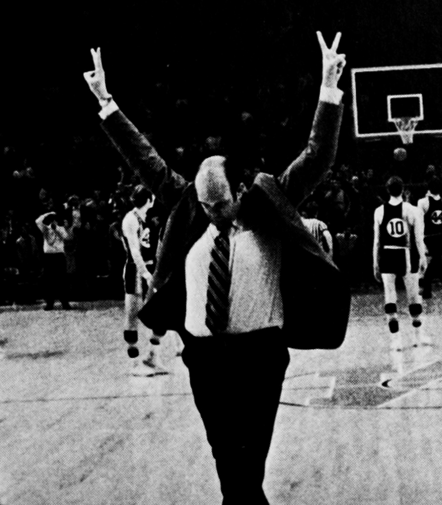
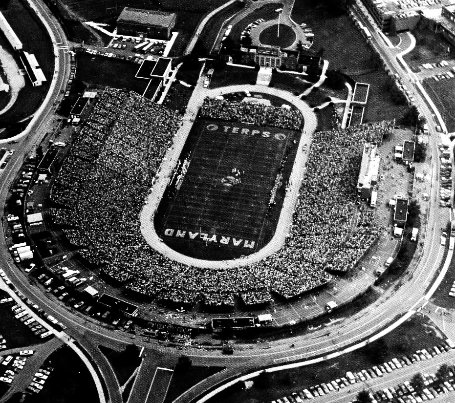
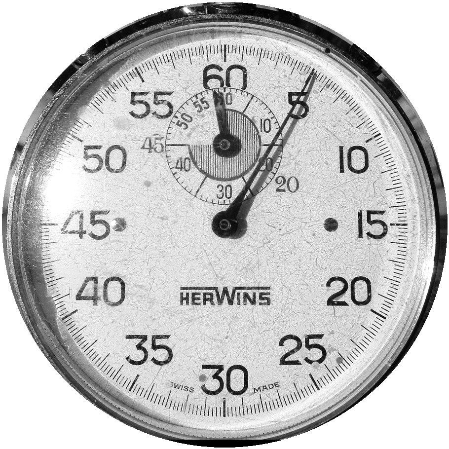
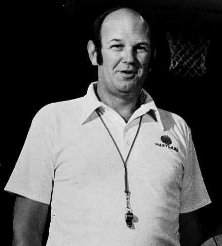

Fotos: University of Maryland, dominio público; R. Henrik Nilsson, CC BY 4.0 (modificada), vía Wikimedia Commons. Calendario, reglamento, reloj, pista, coches y portada: recreación.
OCTUBRE
15
1971
REGLAMENTO · RECREACIÓN
PRIMER DÍA DE ENTRENAMIENTO:
15 DE OCTUBRE

MARYLAND · c. 1970
ENTRENADOR · MARYLANDLEFTY DRIESELL
Foto: University of Maryland (c. 1969–70) · dominio público

BYRD STADIUM · c. 1975 · PISTA, JUGADORES Y COCHES: RECREACIÓN

CRONÓMETRO · c. 1970
Fotos: University of Maryland (c. 1975), dominio público · cronómetro: R. Henrik Nilsson, CC BY 4.0 (modificada)
EDICIÓN ESPECIAL · PORTADA: RECREACIÓN

Foto: University of Maryland (c. 1976) · dominio público